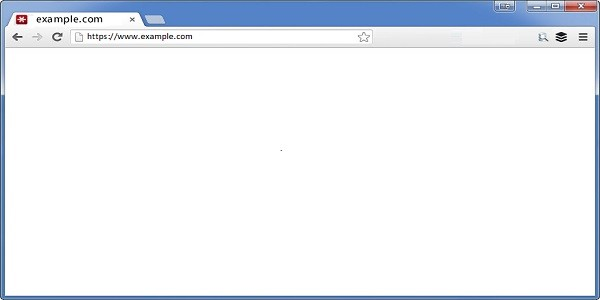
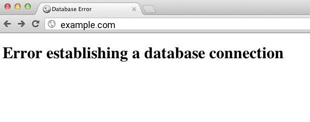
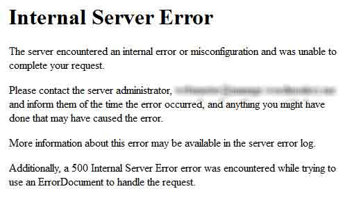
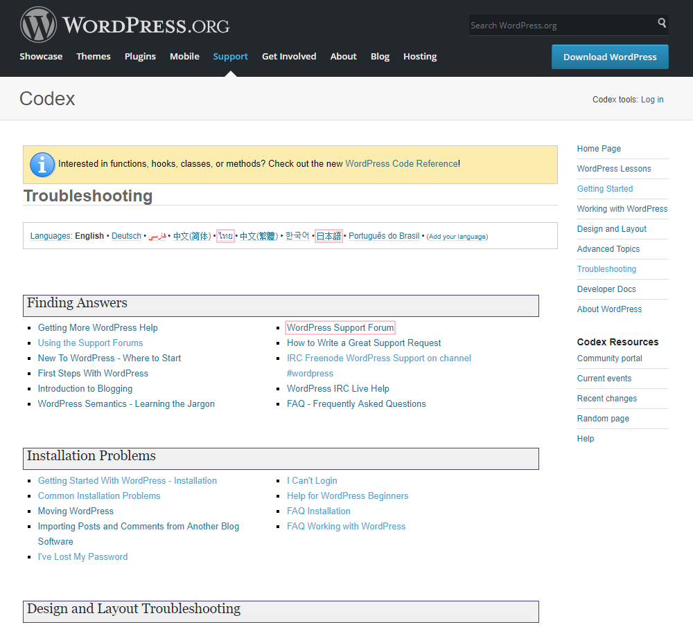
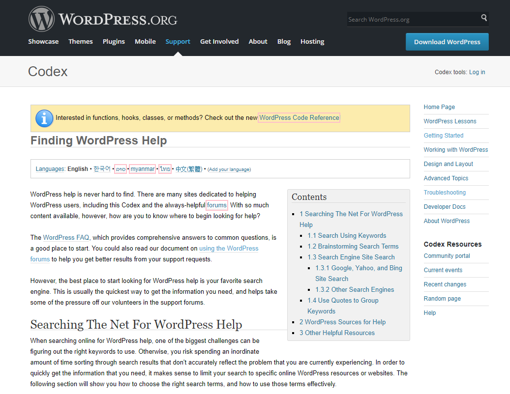
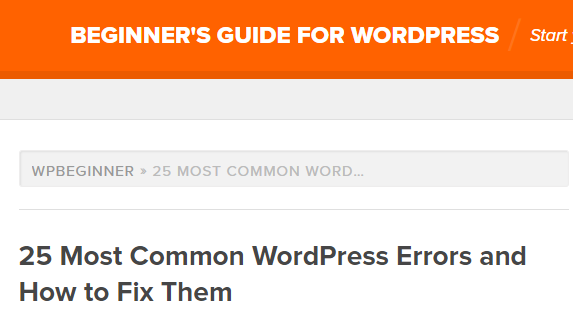

WP101 - WordPress Troubleshooting
Goals For Session
How To Troubleshoot WordPress
Basic WordPress Fixes & Tips
Finding Professional Support
The Happiness Bar
This is What I Have in Mind
- Common WordPress Issues
- Demos on Fixes
- Support - Professional and then some
- Open Up for Q & A
Common WordPress Problems
- White Screen of Death
- Error Establishing a Database Connection
- Maintenance Mode Forever
- Internal server error
- Syntax Error in WordPress
White Screen of Death
- Memory Issues
- Plugin / Theme Conflicts

Error Establishing a Database Connection
- Error talking to WP db
- Login credentials
- Db corrupt
- MySQL issue on host

Syntax Error in WordPress
- Pasted Code Snippet
- Need FTP to fix
- Remove replace new code

HTTP 500 Internal Server Error
- Not a WordPress issue
- Corrupt .htaccess
- . or PHP memory
- . . or plugin conflict
- . . . or . . .

Troubleshooting WordPress
- Disable all plugins
- Re-enable plugins 1x1
- Switch to default theme
- Refresh permalinks
- Check Site URL in Settings | General
- Refresh browser cache
- Turn off caching plugins
Demo: Deactivate All Plugins
Demo: Switch to Default Theme
Demo: Refresh Permalinks
Review Site URL
Demo: Site Stuck at Maintenance Forever
Need More Help?
Finding Professional Support

Finding Professional Support

Finding Professional Support

Finding Professional Support
Local Meetups
- Philly 'Burbs WordPress - 2nd Mon
- Philadelphia WordPress - 3rd Thu
- WordPress Lancaster - 3rd Thu
- Lehigh Valley WordPress - 2nd Thu
- Reading WordPress - 3rd Tue
Finding Professional Support
The Happiness Bar - Huh?!?!

- Think Help Desk
- Staffed by Volunteers
- Troubleshoot Problems
- Answer Questions
- Judgement-Free Zone
Resources Noted
- codex.wordpress.org/Troubleshooting
- codex.wordpress.org/Finding_WordPress_Help
- www.wpbeginner.com/common-wordpress-errors-and-how-to-fix-them
- www.wpbeginner.com/wp-tutorials/how-to-fix-the-wordpress-white-screen-of-death
- www.wpbeginner.com/beginners-guide/beginners-guide-to-troubleshooting-wordpress-errors-step-by-step
- wordpress.org/support
More Resources Noted
- meetup.com/philly-burbs-wordpress-meetup/
- meetup.com/Philadelphia-WordPress-Meetup-Group/
- meetup.com/WordPress-Lancaster/
- meetup.com/Lehigh-Valley-WordPress-Meetup/
- meetup.com/Reading-WordPress-Meetup/
Thanks!
Matt Ryan
matt@capwebsolutions.com
@MattRy
Q's ???